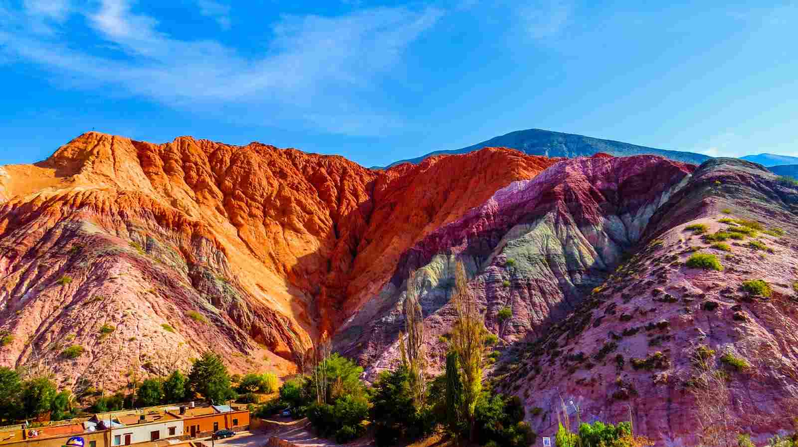
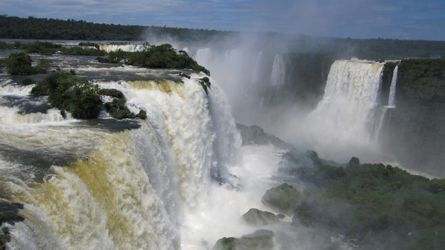
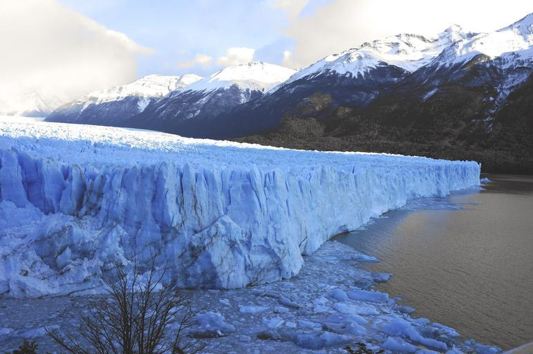
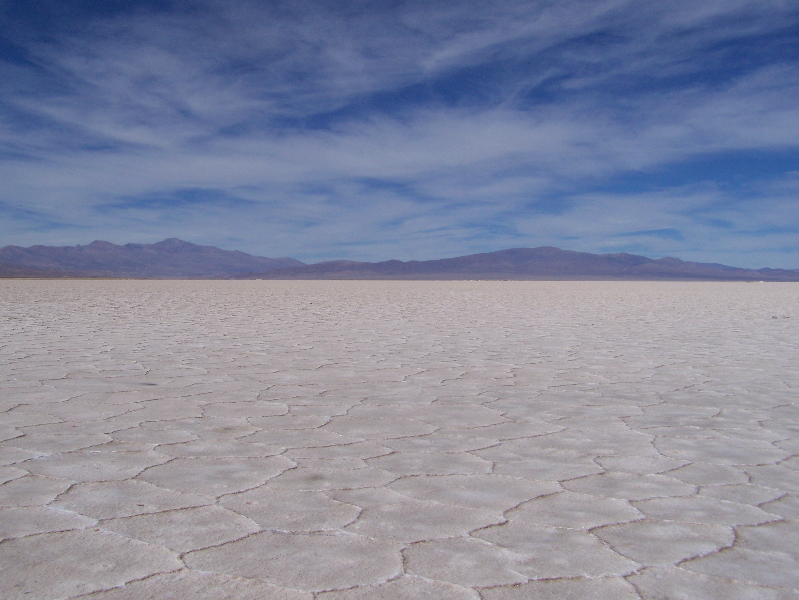

El pasear por tu país te ayudará a enterarte de las cosas buenas que tu tierra tiene que ofrecerle al turista. Asimismo, verás con otros ojos las bellezas de tu país al explorarlas en primera persona, lo que te hará ser un individuo más agradecido por todo lo que tienes a tu alcance. Ya sea que busques aventura, relajación o cultura, un viaje nacional es la opción perfecta para conectar con tus raíces y explorar lo que a veces pasa desapercibido.

El Cerro de los 7 colores es uno de los centros de turismo más importantes de Jujuy, y uno de los más concurridos en todo el país. La característica principal de este hermoso lugar se centra en los siete colores que pueden ser vistos al ver al costado del cerro, los cuales se generan por los diferentes minerales que se encuentran en la tierra.

El Parque Nacional Iguazú es un paraíso para los amantes de la observación de aves, con más de 400 especies registradas. Así, entre ellos destacan la imponente águila arpía y el vibrante tucán, que añaden colores y vida a los cielos y bosques del parque. Su exuberante selva abunda en lianas, epífitas y helechos. Y obviamente su mayor atractivo, más de 2 km de cascadas que superan los 70 metros de altura, una manifestación espectacular de uno de los recursos cada vez más escasos del planeta: el agua.

El Perito Moreno es uno de los glaciares más importantes que se desprenden del Campo de Hielo Patagónico Sur, ubicado en la cordillera sur de los Andes (Argentina y Chile). Este campo de hielo es el último remanente de las mayores expansiones glaciares ocurridas desde finales del Mioceno hasta finales del Pleistoceno.

En un viaje por esta parte del país, visitar las Salinas Grandes es una de las excursiones que encabezan todo itinerario. Su singular belleza y su fácil acceso hacen que sea uno de los favoritos de los turistas.